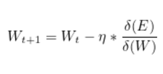

Stochastic Gradient Descent also called SGD is one of the most used classical machine learning optimization algorithms. It is the variation of Gradient Descent. In Gradient Descent, we iterate through entire data to update the weight. When there is a huge amount of dataset to train the model, in that situation Gradient Descent is very expensive in terms of time complexity.
So to reduce the time we use a slight variation of Gradient Descent also called SGD. In SGD, we pick up a single data point randomly from the dataset and update the weights based on the decision of that data point only. Following are the steps that we use in SGD:
- Randomly Initialize the weights/coefficients for the initial Iteration. These could be a small random value.
- Initialize Learning Rate, No of Epochs to the algorithm. These are the hyperparameter, so can be tunned using cross-validation.
- Make the prediction.
- Calculate the error E.
- Update the coefficient using the below formula (Choose a Random Point to Claculate the Gradient).
- Got to step 3 and check if the number of epochs is over or the algorithm has converged.
Given a data point, old coefficients, etc, this block of code will update the coefficient.
This block of code will make the prediction, given some unknow data point with coefficients.
This is the block of code it will take some parameters such as training data, learning rate, number of epochs, the range value r and will return the optimal coefficients. Learning rate, r, number of epochs are hyperparameters.
Finally, after calculating the coefficients we will make the prediction for test data.
You can execute the code by just copy-pasting the code in juypter notebook. You just need to provide the X_train, X_test, Number of Epochs, r, Learning Rate. If you are not able to run the code, do let me know in the comment. I will reply within one hour.
- Download the IRIS Data-Set : https://www.kaggle.com/c/boston-housing
- Perform all the above steps on this dataset.
- After performing the above steps just comment in the comment section and let us know the Root Mean Squared Error of your model.
If you are stuck with any of the step, just comment below, we will help you.
This article is contributed by Karan Kumar Rajput. Click Here To Read More Articles. To work with us, Please fill out the form, we will get back to you soon.